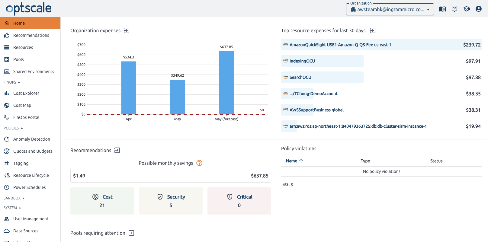
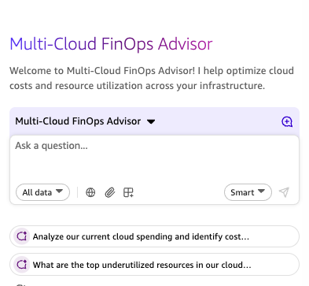
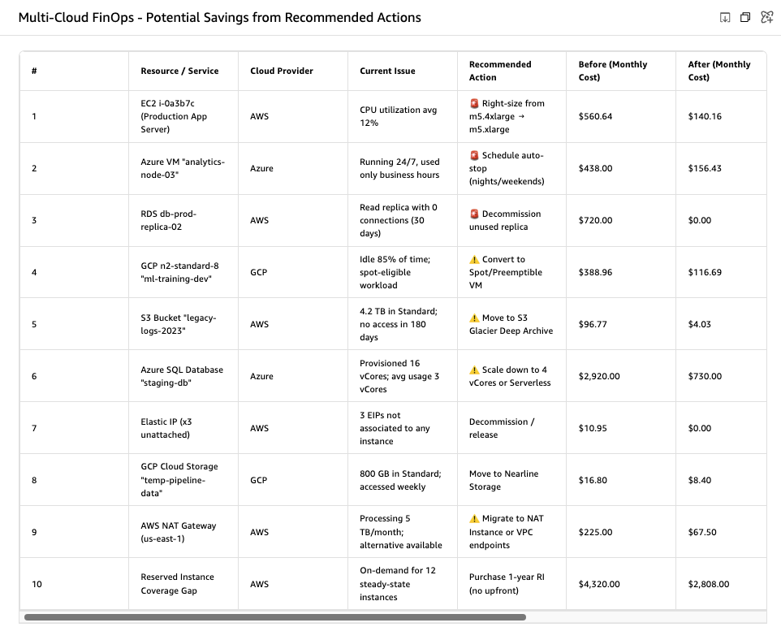
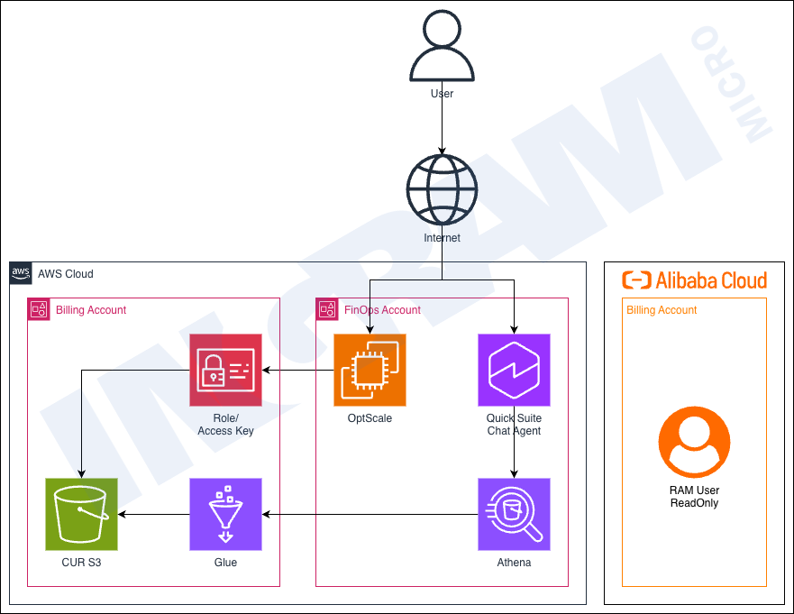

AI+ Power 2026 · Builder's Demo
Agentic FinOps
for multi-cloud
A walkthrough of what I built — an agentic loop where AI spots cost issues, proposes a fix, and a human approves before anything touches infrastructure.
Presented by
John NG — Partner Solution Architect
Event
AI+ Power 2026
Date
17 May 2026
What got me thinking
The thing that
kept bugging me
kept bugging me
I see it
A cost spike shows up in the dashboard —
but the dashboard won't tell me what to do
but the dashboard won't tell me what to do
I dig in
Half an hour later I've figured out the cause —
and it was a forgotten dev instance again
and it was a forgotten dev instance again
I fix it
Two days after the spike. The waste already
happened. I just cleaned up after it.
happened. I just cleaned up after it.
Other builders told me the same
It's not just
me, is it?
me, is it?
-
📊
We're great at observing, bad at acting
We've invested in dashboards, alerts, and cost reports. But they all end with a human having to figure out the next step.
-
🔁
It's always the same class of problem
Forgotten dev instances. Oversized reservations. Idle resources. The diagnosis is repetitive — so why are we still doing it manually?
-
🤔
Agentic AI feels like the right fit here
Observe a signal, reason through options, take a bounded action. That's exactly what an agent is good at — so I tried building it.
That got me thinking...
"What if I connected an AI agent directly to my cost data and gave it the ability to act — with guardrails?"
What I Built
The System I Put Together
Step 01
☁️
Your bills
flow in
flow in
Your cloud spending data from AWS and Alibaba syncs into OptScale automatically every day — no exports, no manual work.
Data Collection
›
Step 02
🔍
A spike
is spotted
is spotted
OptScale watches your spending 24/7. The moment something looks unusual — a sudden spike, an idle resource — it raises a flag instantly.
Anomaly Detection
›
Step 03
🤖
AI figures
out the fix
out the fix
The AI chat agent reads the alert, understands the context, and proposes a remediation — with its reasoning shown so you can see exactly why it's suggesting that action.
AI Reasoning
›
Step 04
✅
The fix
happens
happens
You review the agent's proposal and approve it. The action then executes on AWS. OptScale confirms the cost normalises. You stayed in control the whole time.
Human-in-the-Loop
↺
The agent handles the detection and reasoning — you stay in the loop for every action that touches infrastructure.
Built with OptScale (open source) + AWS Quick Suite Chat Agent
Walk-through
Let Me Show You the Thing
01
The Spike Shows Up
Observe

OptScale catches it first — expenses charted, 21 cost recommendations already queued. Before I even open my laptop, it knows something's off.
02
The Agent Works It Out
Reason

The Multi-Cloud FinOps Advisor — I ask it to analyse spend and surface underutilised resources. It pulls from OptScale and explains its reasoning before anything happens.
03
It Just… Fixes It
Act

The agent surfaces a prioritised action table — rightsizing, auto-stop, decommission — with before/after costs. You review, you approve. Then it executes.
Follow along →
🔗 Open the Demo
Honest Takeaways
What I Actually Learned
The hardest part was the plumbing, not the AI
Getting clean, structured cost signals out of OptScale and into the agent took more work than writing the agent itself. The AI part was surprisingly straightforward once the data was right.
Human-in-the-loop isn't a limitation — it's the design
The agent suggests, you approve, AWS executes. Keeping that approval step isn't a workaround — it's what makes this safe to run on real infrastructure. The value is in the detection and reasoning, not in removing humans.
Open source made this experiment possible
OptScale is Apache 2.0 — I spun it up in 15 minutes with docker-compose, no procurement, no negotiation. That low barrier is what let me prototype fast and actually learn something real.
The "detect → explain → approve → fix" loop feels right
The first time I watched a real spike get caught, explained clearly, and resolved with one approval click — it felt like the right balance. Fast enough to matter, controlled enough to trust.
Want to build this yourself? Everything is open.
Technical Reference
Solution Architecture
AWS Cloud
Alibaba Cloud
Open Source

ℹ️
User → OptScale (FinOps Account) detects anomalies → Quick Suite Chat Agent reasons via AgentCore Gateway + MCP → actions loop back to OptScale. Billing data read-only from AWS CUR S3 and Alibaba Cloud RAM user.
Q&A
Open floor
Questions?
Let's dig in.
Let's dig in.
Happy to go deeper on any part of the build — the architecture, the tooling choices, what broke, or what I'd do differently next time.
Things we can dig into
How OptScale ingests multi-cloud billing data
How the Chat Agent connects to OptScale's API
Guardrails and human-in-the-loop design decisions
Adopting this pattern inside your organisation

John NG
Partner Solution Architect
Exploring agentic FinOps
Exploring agentic FinOps
Connect on LinkedIn
↑ Scan to connect